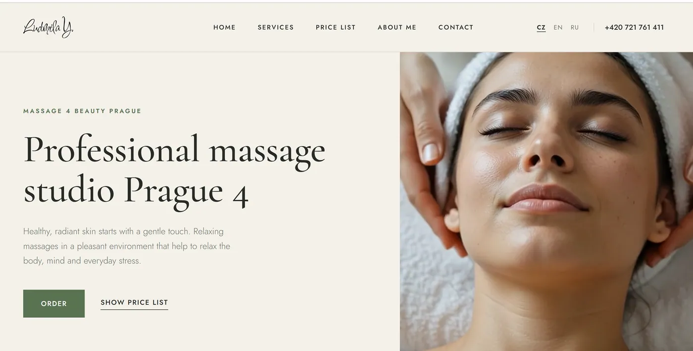

Один специалист, три языка, против сетей.
Сертифицированная массажистка с десятью годами практики против wellness-сетей, которые превосходят ее бюджетом в каждом канале. Сайт построен вокруг двух вещей, которые сеть не скопирует.

С чего все началось
Кабинет одного мастера не выигрывает ценой, графиком или рекламным бюджетом. У него ровно два преимущества перед сетью, и оба обычно закопаны внизу главной: глубина списка техник и то, что каждую процедуру делают одни и те же руки.
Третий фактор в Праге 4 - язык. В Нусле большое чешское сообщество, большое русскоязычное и сверху международное. Это три отдельных рынка с тремя отдельными способами искать один и тот же массаж.
Сеть продает процедуру. Специалист продает причину записаться на эту процедуру именно к нему. Сравнение цен переживает только второе.
Подход
Большую часть работы сделали два структурных решения.
Первое - лицо и тело это разные бизнесы
Работа с лицом здесь необычно глубокая: ритуал для лица, лимфодренаж, миофасциальный и лифтинговый массаж, гуаша, трансбуккальный массаж, альгинатная маска, массаж головы. Это лестница процедур, которые бронируют повторно и ищут по названию, часто как альтернативу процедурам в клинике эстетической медицины.
Работу с телом - спортивный, классический, антицеллюлитный, медовый массаж, массаж бамбуковыми вениками, банки, рефлексология, спина, аромамассаж, лимфодренаж - покупают по другим причинам и в другом ритме, часто один раз, под конкретную жалобу.
Слитые в один список, оба направления слабеют. Разделенные, каждое становится находимым для тех, кто его уже ищет.
Второе - доказательство это сама мастер
Десять лет практики и сертификация - самый сильный сигнал доверия, который есть у этого кабинета, и единственное, что сеть принципиально не воспроизведет, потому что сеть не пообещает, какой именно сотрудник вас примет. Поэтому человека не прячут на странице «обо мне» для галочки: она подана как причина, по которой список техник вообще вызывает доверие.
Чехи, англоязычные и русскоязычные жители Праги 4 называют одну и ту же процедуру разными словами и взвешивают разное, когда выбирают. Трансбуккальный массаж, гуаша и лимфодренаж у этих трех групп узнаваемы в разной степени. Каждая версия написана под свою аудиторию, а не пропущена через перевод поверх чешской.
Что было сделано
- Сайт и структура SEO - процедуры для лица и тела разделены в собственные находимые структуры.
- Трехъязычная версия - чешский, английский и русский, каждая версия написана под то, как ищет эта аудитория.
- Позиционирование мастера - сертификация и десятилетие практики как основа сайта, а не примечание.
- Локальный контент - сигналы Праги 4 и Нусле, чтобы кабинет конкурировал сначала в своем районе, а уже потом со всем городом.
- Прайс и подарочные сертификаты - сделаны как отдельные точки входа, потому что и то, и другое ищут напрямую.
Работающие слои
Результаты
Будут опубликованы вместе с периодом, который они охватывают: запросы в топе по языкам, пути входа «лицо или тело» и обращения по источникам.
Что дальше
Цикл отзывов уже работает. Осталось доделать Гугл Бизнес Профиль с полноценно проработанными тремя языками: для одного мастера отзывы вместе с профилем - самый быстрый способ превратить преимущество в доверии в то, что умеют читать поисковики. Потом аналитика в разрезе языков, потому что эти три рынка почти наверняка ведут себя по-разному.
Конкурируете с большими бюджетами?
Специалисты побеждают сети конкретикой. Она должна быть встроена в структуру сайта, а не просто написана в текстах.